Design B Hybrid — final window set: mockups
15 windows · 1600×1000 viewport captures · dark theme. Design B selected Oct 8, 2026 as the base — all 8 of its original windows are preserved. Data windows add a per-window View selector (Appliance | Console | Topology) switching presentation of the same data; the Service Map is a new first-class window. From design-b-hybrid.md.
01Setup wizard — auto-run checklist, completion bar, re-run auditAppliance
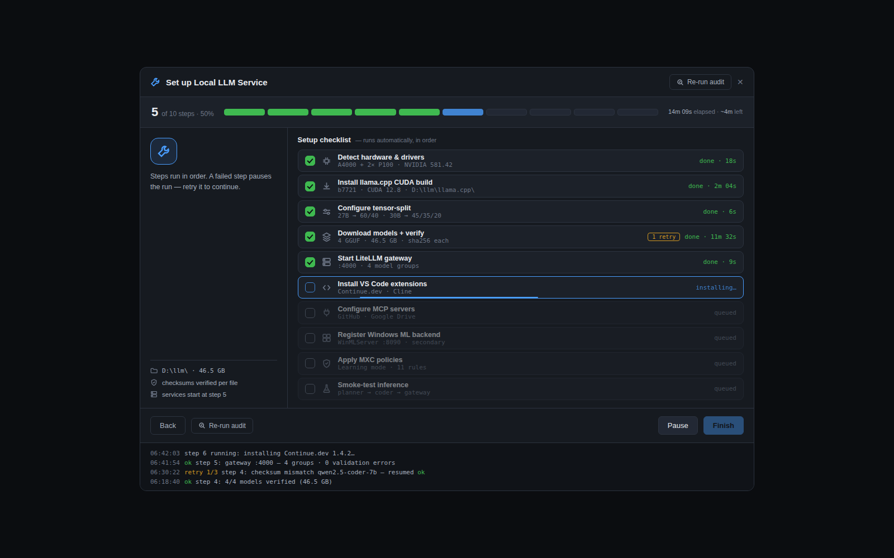
02Dashboard — health gauge cards, GPU rings, throughput chartAppliance
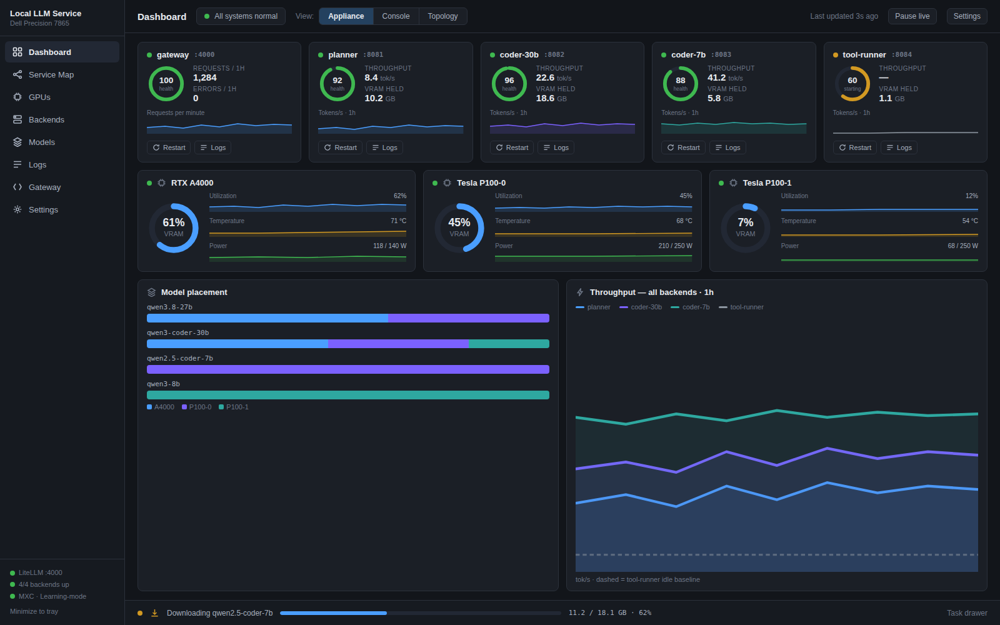
03Dashboard — dense service and GPU tables, event linesConsole
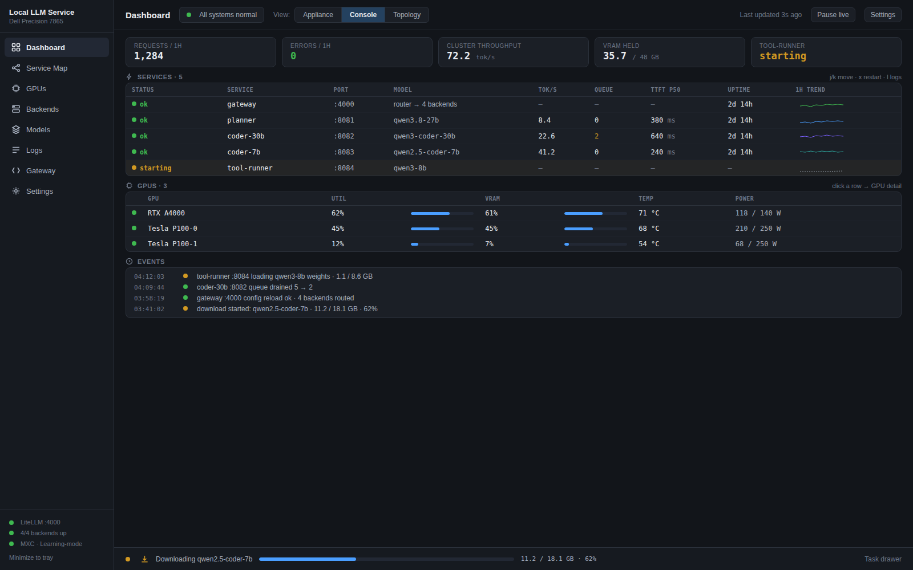
04Dashboard — cluster node map, clients through GPUsTopology
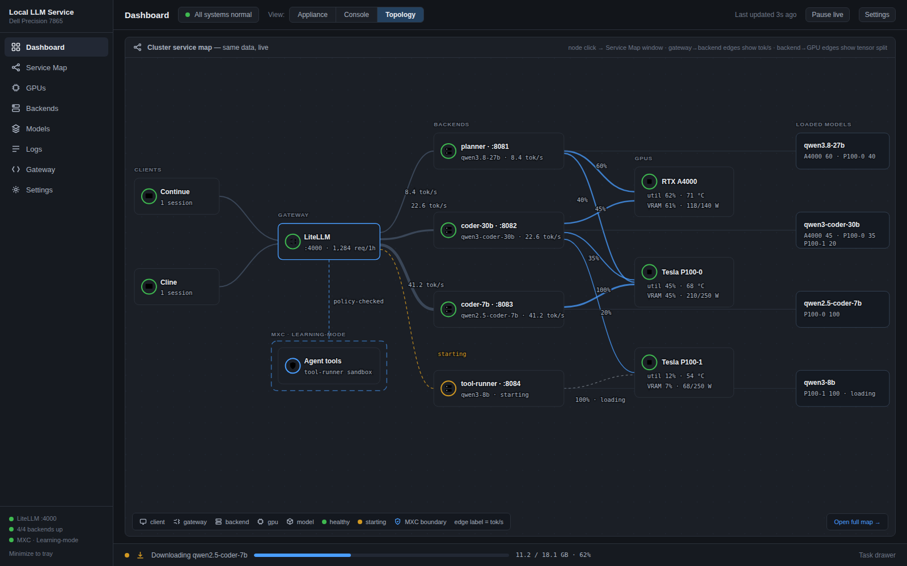
05Service Map — full cluster topology, event timelineTopology
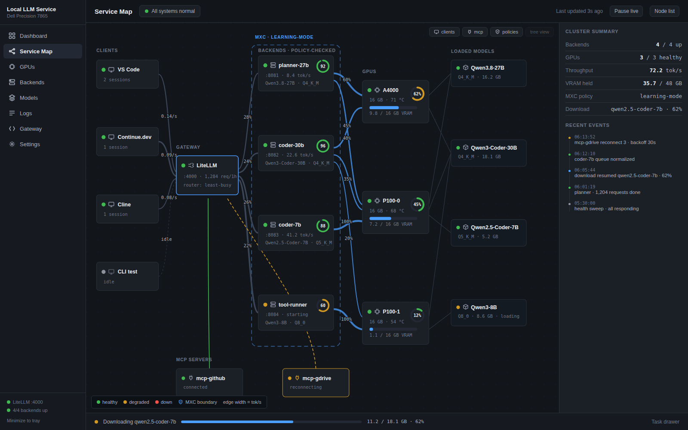
06GPUs — radial gauges, sparkline strips, placement mapAppliance

07GPUs — console tables, process attribution, tensor splitsConsole
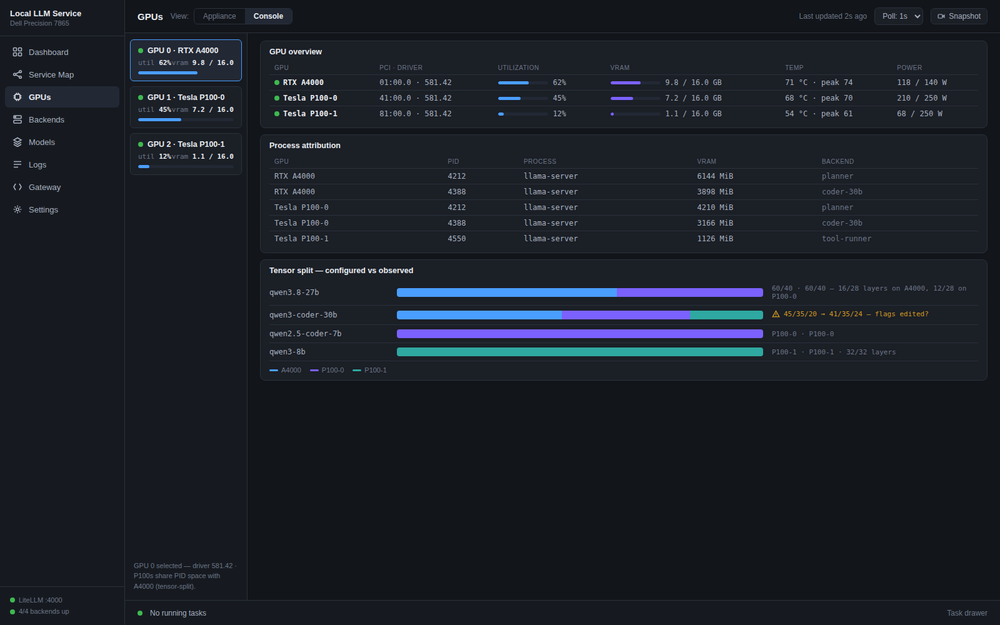
08Backend detail — stat tiles, TTFT chart, health ticksAppliance

09Backend — request-flow graph for planner :8081Topology
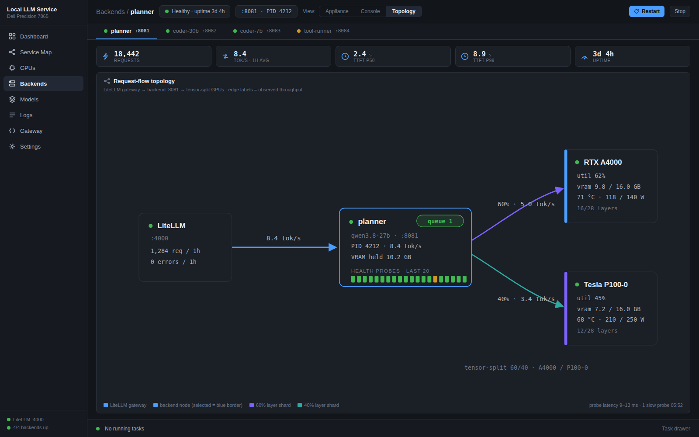
10Models — fit bars, per-GPU fit, checksum statusAppliance

11Logs — icon rows, level-distribution bar, task drawerAppliance

12Logs — dense text stream with level-distribution stripConsole
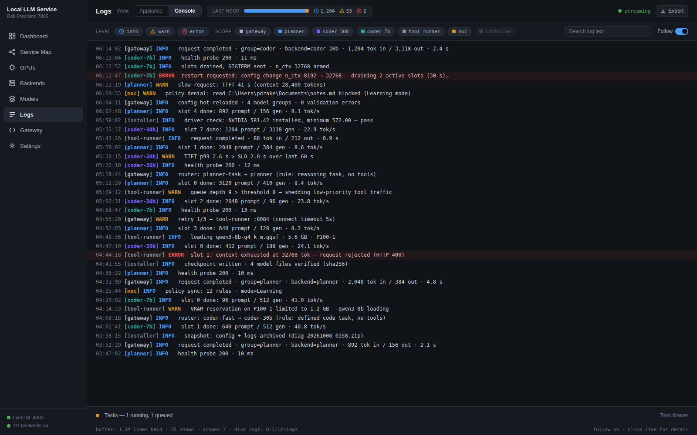
13Gateway — rule cards, model groups, latency sparklinesAppliance
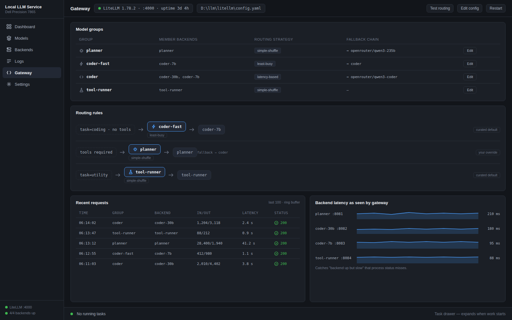
14Gateway — routing flow: rules to groups to backendsTopology
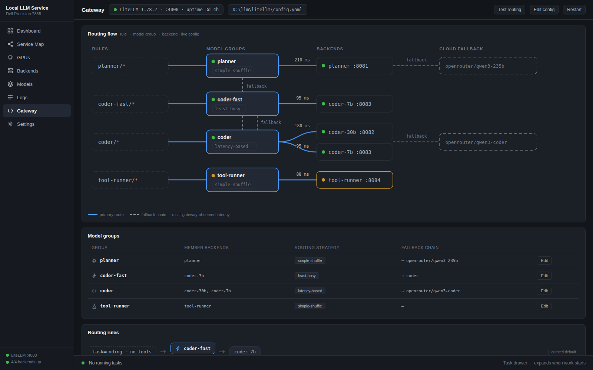
15Settings / MXC — policy tiles, shield chips, learning modeAppliance
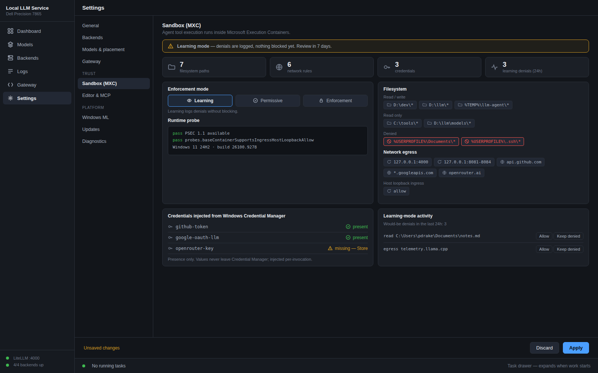